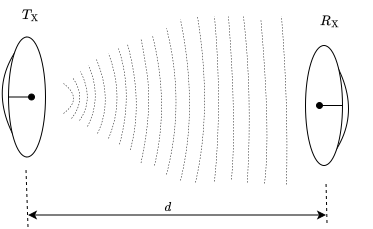
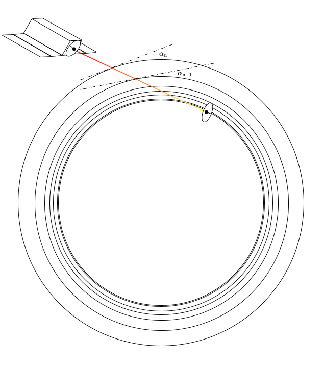
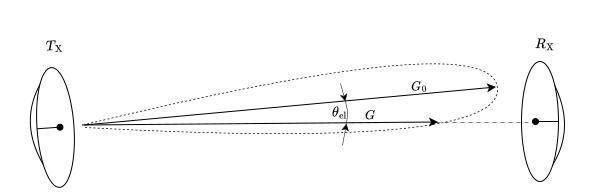
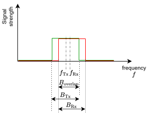

Module: linkBudget
Warning
[BETA] Module: linkBudget is a beta module in an initial public release. This module might be subject to changes in future releases.
Executive Summary
This document describes how the linkBudget module operates within the Basilisk astrodynamics simulation framework. The purpose of this module is to provide a radio link budget calculation between two antennas, enabling the simulation of spacecraft-to-spacecraft or spacecraft-to-ground communication links.
The module computes the end-to-end link budget accounting for free space path loss (FSPL), atmospheric attenuation (based on ITU-R P.676), antenna pointing losses, and frequency offset losses. The primary output is the Carrier-to-Noise Ratio (CNR) for each receiving antenna, which is essential for evaluating communication system performance.
This module requires two connected antenna output messages (e.g. from Module: simpleAntenna modules). The link budget calculation automatically determines the link configuration (space-to-space or space-to-ground) based on the antenna environment types.
Message Connection Descriptions
The following table lists all the module input and output messages. The module msg connection is set by the user from python. The msg type contains a link to the message structure definition, while the description provides information on what this message is used for.
Msg Variable Name |
Msg Type |
Description |
Note |
|---|---|---|---|
antennaInPayload_1 |
Output message from antenna 1 |
Required |
|
antennaInPayload_2 |
Output message from antenna 2 |
Required |
|
linkBudgetOutPayload |
Link budget calculation results |
Output |
Detailed Module Description
The linkBudget module calculates the radio link budget between two antennas. It receives antenna state information from two antenna modules (e.g. Module: simpleAntenna) and computes the various losses and the resulting Carrier-to-Noise Ratio (CNR) for each receiving antenna.
The module supports the following communication configurations:
Space <–> Space: Direct line-of-sight communication between two spacecraft
Space <–> Ground: Communication between a spacecraft and a ground station on Earth
Ground <–> Ground communication and communication with a Ground station not on Earth are not supported (see Module Assumptions and Limitations).
Link Budget Calculation Overview
The link budget equation implemented by this module is:
where:
\(P_\mathrm{Rx}\) is the received power at the receiver antenna in \([\mathrm{dBW}]\)
\(P_\mathrm{EIRP}\) is the Equivalent Isotropically Radiated Power (EIRP) of the transmitter antenna in \([\mathrm{dBW}]\)
\(G_\mathrm{Rx}\) is the receiver antenna gain in \([\mathrm{dBi}]\)
\(L_\mathrm{FSPL}\) is the Free Space Path Loss (FSPL) in \([\mathrm{dB}]\)
\(L_\mathrm{atm}\) is the atmospheric attenuation loss in \([\mathrm{dB}]\)
\(L_\mathrm{point}\) is the pointing error loss in \([\mathrm{dB}]\)
\(L_\mathrm{freq}\) is the frequency offset loss in \([\mathrm{dB}]\)
The following sections describe each loss term in detail.
Free Space Path Loss (FSPL)
{kind=link}

Figure 1: Illustration of Free Space Path Loss (FSPL) between two antennas
The Free Space Path Loss (FSPL) accounts for the signal power reduction due to the spreading of electromagnetic waves over distance. This is often the dominant loss term in space communication links. The FSPL is illustrated in Figure 1, showing two antennas separated by distance \(d\).
where:
\(d\) is the distance between the two antennas \([\mathrm{m}]\)
\(\lambda = c / f\) is the wavelength \([\mathrm{m}]\), with \(c\) \([\mathrm{m/s}]\) being the speed of light and \(f\) \([\mathrm{Hz}]\) the center frequency of the overlapping bandwidth.
The distance \(d\) is computed from the antenna position vectors \(\mathbf{r}_\mathrm{A1,N}^\mathrm{N}\) and \(\mathbf{r}_\mathrm{A2,N}^\mathrm{N}\) provided in the input messages:
Atmospheric Attenuation
{kind=link}

Figure 2: Illustration of atmospheric attenuation calculation along the slant path from ground to spacecraft
For space-to-ground links, the module computes atmospheric attenuation due to oxygen, water vapor and nitrogen absorption following the ITU-R P.676-13 recommendation. This calculation is only performed when atmospheric attenuation is enabled atmosAtt == True and one antenna is located on the ground.
The atmospheric attenuation model divides the atmosphere into discrete layers (increasing thickness with increasing altitude) from the ground antenna altitude up to 100 km (Karman line). The slant path depending on angle \(\alpha\) (see Figure 2) through each layer is computed based on the antenna positions and the altitude of each layer.
The atmospheric conditions (temperature, pressure, water vapor density) at each altitude layer are obtained from the ITU-R P.835-7 reference standard atmosphere model via the ItuAtmosphere utility class.
Note
Atmospheric attenuation lookup tables are precomputed at initialization, using the ground antenna position and frequency and re-used during simulation. Changes in frequency during simulation will not update the atmospheric attenuation profile.
For more information the reader is referred to the following ITU-R recommendations:
ITU-R P.676-13: Attenuation by atmospheric gases and related effects
ITU-R P.835-7: Reference standard atmospheres
ITU-R P.453-14: The radio refractive index: its formula and refractivity data
Pointing Loss
{kind=link}

Figure 3: Illustration of pointing loss due to antenna misalignment (pointing error angle in elevation, \(\| \theta_\mathrm{el} \| > 0^\circ\))
The pointing error loss accounts for signal degradation when the antennas are not perfectly aligned. This loss is computed assuming a Gaussian antenna radiation pattern (consistent with the Module: simpleAntenna module).
For each antenna, the pointing error is decomposed into azimuth and elevation components relative to the antenna boresight direction:
According to the Module: simpleAntenna gaussian-beam pattern, the pointing loss is computed as:
where:
\(e\) is Euler’s number \([-]\)
\(\theta_\mathrm{az}\) is the azimuth pointing error \([\mathrm{rad}]\)
\(\theta_\mathrm{el}\) is the elevation pointing error \([\mathrm{rad}]\)
\(\theta_\mathrm{HPBW,az}\) is the Half-Power BeamWidth in azimuth \([\mathrm{rad}]\)
\(\theta_\mathrm{HPBW,el}\) is the Half-Power BeamWidth in elevation \([\mathrm{rad}]\)
For space-to-space links, the total pointing loss is the sum of pointing losses from both antennas. For space-to-ground links, the ground antenna is assumed to be perfectly pointed at the spacecraft, so only the spacecraft antenna pointing loss is computed.
Note
If a custom antenna module is implemented (non gaussian radiation pattern), the pointing loss calculation in the linkBudget module must be updated accordingly!
Frequency Offset Loss
{kind=link}

Figure 4: Illustration of frequency offset loss due to partial bandwidth overlap
The frequency offset loss accounts for the reduction in effective bandwidth when the two antennas operate at slightly different center frequencies or have different bandwidths.
The overlapping bandwidth is computed as:
where:
The frequency offset loss is then:
where \(B_\mathrm{min} = \min(B_\mathrm{Tx}, B_\mathrm{Rx})\) is the smaller of the two antenna bandwidths. For partial overlap (\(0 < B_\mathrm{overlap} < B_\mathrm{min}\)), this yields a positive loss term.
\(f_\mathrm{high}\) is the upper frequency of the overlapping bandwidth \([\mathrm{Hz}]\) (see Figure 4)
\(f_\mathrm{low}\) is the lower frequency of the overlapping bandwidth \([\mathrm{Hz}]\) (see Figure 4)
\(f_\mathrm{Tx}\) is the transmitter antenna center frequency \([\mathrm{Hz}]\)
\(f_\mathrm{Rx}\) is the receiver antenna center frequency \([\mathrm{Hz}]\)
\(B_\mathrm{Tx}\) is the transmitter antenna bandwidth \([\mathrm{Hz}]\)
\(B_\mathrm{Rx}\) is the receiver antenna bandwidth \([\mathrm{Hz}]\)
If there is no overlapping bandwidth (\(B_\mathrm{overlap} \leq 0\)), the radio link is considered non-functional which is reflected in the link budget calculation.
Carrier-to-Noise Ratio (CNR)
The Carrier-to-Noise Ratio is the primary output of this module for evaluating link performance. It is computed for each antenna that is in receive mode (ANTENNA_RX or ANTENNA_RXTX):
where:
\(P_\mathrm{Rx}\) is the received signal power [dBW]
\(P_\mathrm{N}\) is the noise power from the antenna module [dBW]
If an antenna is not in receive mode, its CNR is set to \(0.0\).
Module Configuration
The following optional settings can be configured:
Parameter |
Default |
Type |
Description |
|---|---|---|---|
atmosAtt |
|
bool |
Enable/disable atmospheric attenuation calculation (only applicable for space-ground links) |
pointingLoss |
|
bool |
Enable/disable pointing loss calculation |
freqLoss |
|
bool |
Enable/disable frequency offset loss calculation |
\(L_\mathrm{FSPL}\) is always calculated and cannot be disabled.
Module Assumptions and Limitations
The following assumptions and limitations apply to the linkBudget module:
Ground-to-ground communication is not supported. Both antennas cannot be in a ground environment simultaneously.
Atmospheric attenuation is based on a clear-sky model. The following effects are not included:
Rain attenuation (ITU-R P.838)
Cloud and fog attenuation (ITU-R P.840)
Ionospheric scintillation effects (ITU-R P.618)
Other ionospheric effects (ITU-R P.531)
Atmospheric signal path bending (ITU-R P.453)
The International Telecommunication Union’s (ITU) Reference Standard Atmosphere (RSA) is used for atmospheric attenuation. Local atmospheric variations and seasonal changes as e.g. shown in ITU-R P.835 are not modeled.
The atmospheric attenuation model is valid for frequencies between 1 GHz and 1000 GHz. This range is defined by the ITU-R P.676-13 recommendation. Frequencies outside this range may produce inaccurate atmospheric attenuation estimates.
Atmospheric attenuation calculations require a minimum elevation angle of: :math:`5^circ`. At lower elevation angles (grazing angles), the slant path through the atmosphere becomes very long, leading to numerical instabilities and potentially unrealistic attenuation values. The module clamps the elevation angle to a minimum of 5° for atmospheric calculations.
Ground antennas can only be placed on Earth. The model does not currently support ground stations on other celestial bodies.
Ground antennas are assumed to be perfectly pointed. For space-to-ground links, only the spacecraft antenna contributes to pointing loss.
Doppler shift due to spacecraft motion is currently not considered. The frequency offset between antennas due to relative motion is not currently computed.
Impedance mismatch losses are not included.
Polarization is not modeled.
Communication between close antennas (< 10 km) may yield inaccurate results. The Gaussian-beam assumption in Module: simpleAntenna may not get accurate results at close range.
Multipath effects are not considered.
Technical Notes
Frequency Range
The atmospheric attenuation model implements the line-by-line calculation method from ITU-R P.676-13, which is valid for frequencies from 1 GHz to 1000 GHz. The model includes:
44 oxygen absorption lines (Table 1 of ITU-R P.676-13)
35 water vapor absorption lines (Table 2 of ITU-R P.676-13)
Pressure-induced nitrogen absorption continuum
Non-resonant Debye spectrum for oxygen below 10 GHz
Elevation Angle Constraints
The atmospheric slant path integration uses the relationship:
where \(\phi(h)\) is the elevation angle at height \(h\). As \(\phi \to 0^\circ\), the denominator approaches zero, causing numerical issues.
To ensure numerical stability, the module enforces a minimum elevation angle of :math:`5^circ` for atmospheric attenuation calculations. This corresponds to a maximum air mass factor of approximately 11.5.
Elevation Angle |
Air Mass Factor |
Notes |
|---|---|---|
\(90^\circ\) (zenith) |
1.0 |
Minimum path length |
\(30^\circ\) |
2.0 |
|
\(10^\circ\) |
5.8 |
|
\(5^\circ\) |
11.5 |
Module minimum |
\(0^\circ\) (horizon) |
inf |
Not supported |
User Guide
Setting Up the Link Budget Module
To use the linkBudget module, you must first create two antenna modules (using Module: simpleAntenna) and connect their output messages to the link budget module.
from Basilisk.simulation import linkBudget, simpleAntenna
from Basilisk.utilities import SimulationBaseClass
# Create simulation
scSim = SimulationBaseClass.SimBaseClass()
# Create process and task
dynProcess = scSim.CreateNewProcess("DynamicsProcess")
dynTaskName = "dynTask"
dynProcess.addTask(scSim.CreateNewTask(dynTaskName, int(1E9))) # 1 second update rate
# Create antenna modules
antenna1 = simpleAntenna.SimpleAntenna()
antenna1.ModelTag = "antenna1"
# ... configure antenna1 parameters ...
antenna2 = simpleAntenna.SimpleAntenna()
antenna2.ModelTag = "antenna2"
# ... configure antenna2 parameters ...
# Create link budget module
linkBudgetModule = linkBudget.LinkBudget()
linkBudgetModule.ModelTag = "linkBudget"
# Connect antenna output messages to link budget inputs
linkBudgetModule.antennaInPayload_1.subscribeTo(antenna1.antennaOutStateMsg)
linkBudgetModule.antennaInPayload_2.subscribeTo(antenna2.antennaOutStateMsg)
# Add modules to task
scSim.AddModelToTask(dynTaskName, antenna1)
scSim.AddModelToTask(dynTaskName, antenna2)
scSim.AddModelToTask(dynTaskName, linkBudgetModule)
Enabling Atmospheric Attenuation
Atmospheric attenuation is disabled by default. To enable it for space-to-ground links, set the atmosAtt flag to True before running the simulation:
# Enable atmospheric attenuation for space-ground links
linkBudgetModule.atmosAtt = True
# Optionally disable other loss calculations
linkBudgetModule.pointingLoss = False # Disable pointing loss
linkBudgetModule.freqLoss = False # Disable frequency offset loss
Note
When atmosAtt is set to True from Python, the module resolves the ITU lookup JSON files using supportDataTools.dataFetcher (pooch-backed), which supports wheel/pip installations.
For advanced workflows, these file paths can be overridden explicitly using setOxygenLookupFilePath() and setWaterVaporLookupFilePath().
Note
Atmospheric attenuation is automatically disabled for space-to-space links regardless of the configuration setting.
Warning
The atmospheric attenuation lookup table is precomputed during module initialization using the ground antenna’s initial position and frequency. Changes to the antenna frequency during simulation will not update the atmospheric attenuation profile. If frequency changes are required, the simulation must be re-initialized.
Accessing Link Budget Results
The link budget module outputs a message of type LinkBudgetMsgPayload. To subscribe to and record this output:
# Set up message recorder
linkBudgetLog = linkBudgetModule.linkBudgetOutPayload.recorder()
scSim.AddModelToTask(dynTaskName, linkBudgetLog)
# Run simulation
scSim.InitializeSimulation()
scSim.ExecuteSimulation()
# Access logged data
CNR1 = linkBudgetLog.CNR1 # [-] Carrier-to-Noise Ratio for antenna 1
CNR2 = linkBudgetLog.CNR2 # [-] Carrier-to-Noise Ratio for antenna 2
distance = linkBudgetLog.distance # [m] Distance between antennas
bandwidth = linkBudgetLog.bandwidth # [Hz] Overlapping bandwidth
frequency = linkBudgetLog.frequency # [Hz] Center frequency
Accessing Individual Loss Terms
The individual loss terms can be accessed through getter methods for debugging or analysis purposes:
L_FSPL = linkBudgetModule.getL_FSPL() # [dB] Free space path loss
L_atm = linkBudgetModule.getL_atm() # [dB] Atmospheric attenuation
L_point = linkBudgetModule.getL_point() # [dB] Pointing loss
L_freq = linkBudgetModule.getL_freq() # [dB] Frequency offset loss
References
The atmospheric attenuation model is based on the following ITU-R recommendations:
ITU-R P.676-13: Attenuation by atmospheric gases and related effects
ITU-R P.835-7: Reference standard atmospheres
ITU-R P.453-14: The radio refractive index: its formula and refractivity data
-
struct LookupTable
- #include <linkBudget.h>
This module describes how the radio link-budget model operates within the simulation environment. The purpose of this module is to provide a basic representation of radio-link communication between two spacecrafts or between a spacecraft and a ground station.
Public Members
-
std::vector<double> f_l
[GHz] Frequency lookup values
-
std::vector<double> l_1
[-] Lookup coefficient a1, b1
-
std::vector<double> l_2
[-] Lookup coefficient a2, b2
-
std::vector<double> l_3
[-] Lookup coefficient a3, b3
-
std::vector<double> l_4
[-] Lookup coefficient a4, b4
-
std::vector<double> l_5
[-] Lookup coefficient a5, b5
-
std::vector<double> l_6
[-] Lookup coefficient a6, b6
-
std::vector<double> f_l
-
struct AttenuationLookupTable
- #include <linkBudget.h>
Precomputed atmospheric attenuation profile Stores layer-by-layer attenuation data for slant path integration.
-
class LinkBudget : public SysModel
- #include <linkBudget.h>
Radio link budget model for spacecraft-to-spacecraft or spacecraft-to-ground communication.
This module computes the end-to-end link budget between two antennas, accounting for:
Free space path loss (FSPL)
Atmospheric attenuation (ITU-R P.676)
Antenna pointing losses
Frequency offset losses
Carrier-to-noise ratio (CNR)
Public Functions
-
LinkBudget()
This is the constructor for the module class. It sets default variable values and initializes the various parts of the model
-
~LinkBudget() = default
-
void Reset(uint64_t CurrentSimNanos)
This method is used to reset the module and checks that required input messages are connect.
-
void UpdateState(uint64_t CurrentSimNanos)
This is the main method that gets called every time the module is updated. Provide an appropriate description.
-
inline double getL_FSPL() const
Get ‘free space path loss’.
GETTERS
- Returns:
FSPL [dB]
-
inline double getL_atm() const
Get atmospheric attenuation loss.
- Returns:
L_atm [dB]
-
inline double getL_freq() const
Get frequency offset loss.
- Returns:
L_freq [dB]
-
inline double getL_point() const
Get pointing loss.
- Returns:
L_point [dB]
-
inline double getCNR1() const
Get carrier to noise ratio of antenna1.
- Returns:
CNR1 [-]
-
inline double getCNR2() const
Get carrier to noise ratio of antenna2.
- Returns:
CNR2 [-]
-
void setOxygenLookupFilePath(const std::string &filePath)
Set the oxygen lookup table JSON file path.
- Parameters:
filePath – Absolute or relative path to
oxygen.json
-
void setWaterVaporLookupFilePath(const std::string &filePath)
Set the water-vapor lookup table JSON file path.
- Parameters:
filePath – Absolute or relative path to
waterVapour.json
-
inline std::string getOxygenLookupFilePath() const
Get the configured oxygen lookup table JSON file path.
- Returns:
Oxygen lookup table path
-
inline std::string getWaterVaporLookupFilePath() const
Get the configured water-vapor lookup table JSON file path.
- Returns:
Water-vapor lookup table path
Public Members
-
bool atmosAtt = false
Enable/disable atmospheric attenuation (only used for space-ground).
-
bool pointingLoss = true
Enable/disable pointing loss.
-
bool freqLoss = true
Enable/disable frequency offset loss.
-
ReadFunctor<AntennaLogMsgPayload> antennaInPayload_1
antenna output antenna 1
-
ReadFunctor<AntennaLogMsgPayload> antennaInPayload_2
antenna output antenna 2
-
AntennaLogMsgPayload antennaIn_1
local copy of message buffer
-
AntennaLogMsgPayload antennaIn_2
local copy of message buffer
-
Message<LinkBudgetMsgPayload> linkBudgetOutPayload
output msg description
-
LinkBudgetMsgPayload linkBudgetOutPayloadBuffer
local copy of message buffer
-
BSKLogger bskLogger
BSK Logging.
Private Functions
-
void readMessages()
-
void initialization()
-
void calculateLinkBudget()
-
void calculateFSPL()
-
void calculateAtmosphericLoss()
-
void generateLookupTable(LinkBudgetTypes::GasType gasType, LookupTable *lookupTable)
-
void precomputeAtmosphericAttenuationAtLayers(AttenuationLookupTable *tableAttenuation, double frequency)
-
Eigen::Vector2d getPointingError(Eigen::Vector3d r_A1N_N, Eigen::Vector3d r_A2N_N, Eigen::MRPd sigma_NA1)
-
void calculatePointingLoss()
-
void calculateFrequencyOffsetLoss()
-
void calculateCNR()
-
void writeOutputMessages(uint64_t CurrentSimNanos)
Private Members
-
LinkBudgetTypes::AntennaPlacement antennaPlacement
[-] Antenna placement type
-
AntennaTypes::EnvironmentType env1
[-] Antenna environment of antenna 1: space, 2: ground
-
AntennaTypes::EnvironmentType env2
[-] Antenna environment of antenna 2: space, 2: ground
-
double distance
[m] Distance between antennas
-
double L_FSPL
[dB] Free space path loss
-
double L_atm
[dB] Atmospheric loss
-
double L_freq
[dB] Frequency offset loss
-
double L_point
[dB] Pointing loss
-
double P_Rx1
[W] Antenna receive power
-
double P_Rx2
[W] Antenna receive power
-
double CNR1
[-] Carrier to noise ratio
-
double CNR2
[-] Carrier to noise ratio
-
double B_overlap
[Hz] Overlapping bandwidth
-
double centerfreq
[Hz] Center frequency of the two antennas
-
const double h_Toa = 100.0e3
[m] Height of top of atmosphere for attenuation integration(TOA = 100 km “Karman line”) (above spherical earth surface)
-
AntennaLogMsgPayload *gndAntPnt = nullptr
[-] Pointer to the ground antenna msg payload
-
AntennaLogMsgPayload *scAntPnt = nullptr
[-] Pointer to the spacecraft antenna msg payload
-
LookupTable oxygenLookup
[-] Oxygen absorption coefficients (frequency plus ITU-R P.676 a1..a6 coefficients)
-
LookupTable waterVaporLookup
[-] Water vapor absorption coefficients (frequency plus ITU-R P.676 b1..b6 coefficients)
-
std::string oxygenLookupFilePath
[-] Optional oxygen lookup table JSON file path override
-
std::string waterVaporLookupFilePath
[-] Optional water-vapor lookup table JSON file path override
-
AttenuationLookupTable attenuationLookup
[-] Atmospheric attenuation lookup table
-
double h_0
[m] Altitude of ground antenna
-
double n_0
[-] Refractivity at ground antenna altitude
-
bool linkValid
[-] Flag indicating if the link is valid (sufficient bandwidth overlap, antennas in correct states, etc.)
-
const double MIN_SIN_ELEVATION = 0.0872